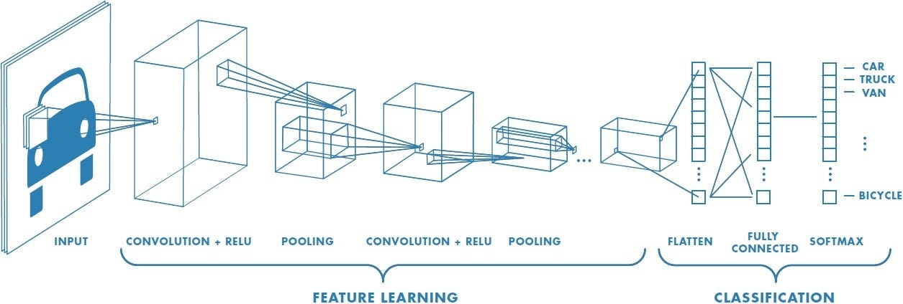
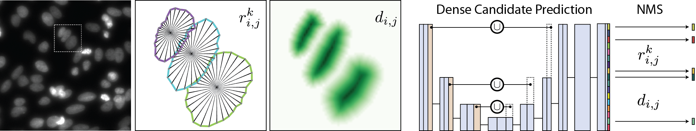
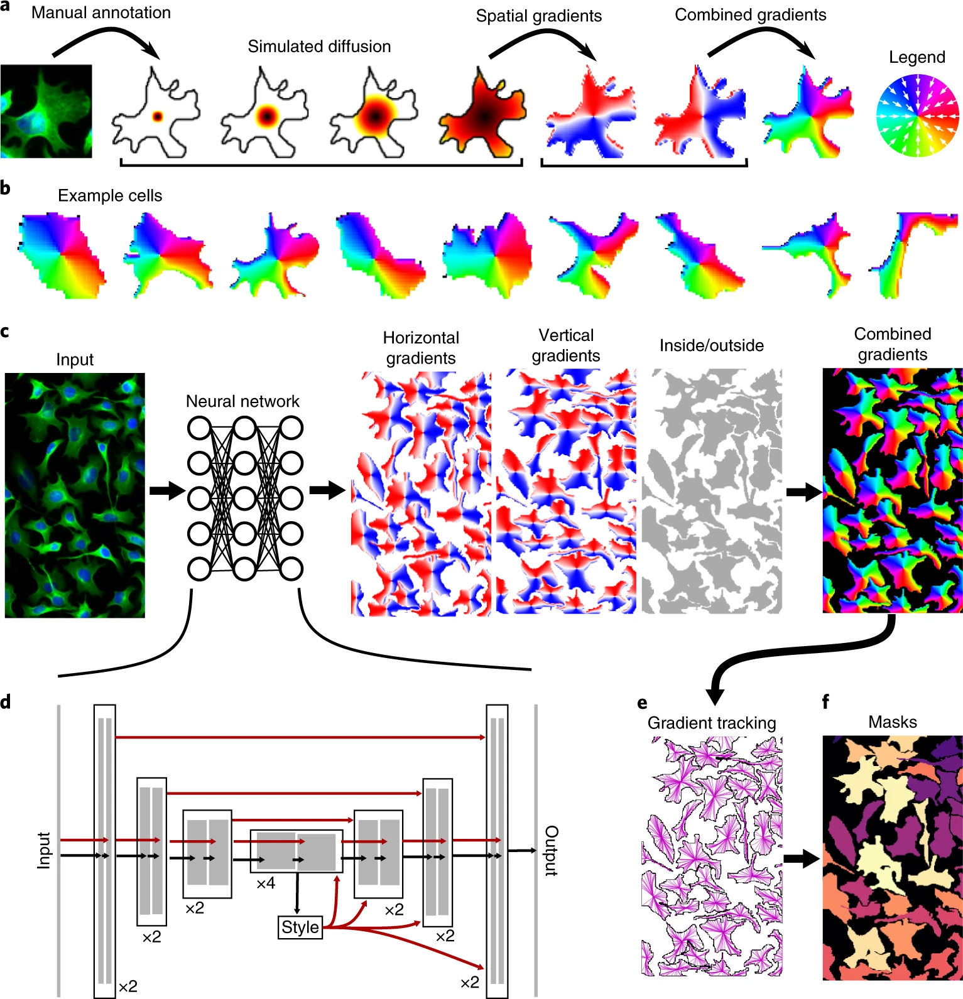

A Brief Timeline of Deep Learning#
This section walks through the evolution of deep learning for image analysis, highlighting how convolutional neural networks (CNNs) became the core of modern segmentation tools. We will cover the key breakthroughs that led to U-Net, and show how specialized tools like StarDist and Cellpose build upon it.
CNN in Practice (2010-)#
Before CNNs, machine learning in image analysis relied on hand-crafted features. These features were designed manually:
Texture filters
Edge detectors
Shape descriptors
This approach had several problems:
Features worked only for certain types of images.
Human intuition was often biased.
Models didn’t generalize well to new data.
Breakthrough: Let the Model Learn the Features
In the early 2010s, researchers realized that instead of designing features by hand, we could train a model to learn features directly from raw image pixels. This is where Convolutional Neural Networks (CNNs) came in.
What is a CNN?#
A convolutional neural network (CNN) is a type of neural network specially designed for images.
Key Ideas in CNNs:
Convolutional layers: Filters (or “kernels”) slide over the image and detect local patterns like edges, lines, or textures.
Pooling layers: Downsample the image to retain important information while reducing size.
Stacked layers: Combine many layers so the network can build up from simple features to complex ones (e.g., from edges to full cell shapes).

CNNs became popular after the success of AlexNet in 2012, which won the ImageNet competition by a large margin. This moment marked the beginning of the modern deep learning era.
Segmentation as a Pixel Classifier#
While CNNs were first used for image classification (e.g., “Does this image contain a cat?”), biomedical researchers needed more: per-pixel predictions like “Which pixels belong to which cell?”
Early solutions tried to adapt classification networks into segmentation tasks by:
Applying CNNs to small image patches
Upsampling coarse predictions
But this was inefficient and inaccurate for fine biological structures.

Source: SegNet: A Deep Convolutional Encoder-Decoder Architecture for Image Segmentation
Introducing U-Net (2015)#
The real breakthrough for biomedical image segmentation came with the introduction of U-Net in 2015 by Ronneberger et al., developed specifically for segmenting cells in light microscopy images.
Key Features#
Component |
Function |
|---|---|
Encoder (contracting path) |
Learns what features are present. Downsamples the image while extracting key patterns. |
Decoder (expanding path) |
Reconstructs the segmentation mask. Upsamples to original image size. |
Skip connections |
Link encoder and decoder layers to preserve spatial details like edges and boundaries. |

Source: U-Net: Convolutional Networks for Biomedical Image Segmentation
Why U-Net Works So Well for Bioimages:#
Works well even with small datasets.
Preserves fine details through skip connections.
Generalizes across different staining protocols and microscopy types.
Can be trained end-to-end from raw images to segmentation masks.
StarDist (2018): Instance Segmentation With Shape Priors#
StarDist was developed specifically to adress domain specific challenges such as touching nuclei.
Instead of labeling every pixel directly, StarDist models each object as a star-convex polygon—a shape where all points on the boundary can be reached from the center by a straight line.
What StarDist Does:#
Predicts the center of each object.
Predicts a set of rays (lines) that describe the object’s boundary.
Reconstructs each object from its rays and ensures they don’t overlap.

Source: stardist/stardist
Why It Works:#
Excellent at separating closely packed nuclei.
Uses U-Net as its backbone, but adds geometric reasoning.
Requires moderate annotation effort—annotating centers and boundaries.
StarDist is ideal for: nuclei segmentation in crowded 2D images where objects are mostly round or convex.
Cellpose (2020): A Generalist Model Using Flow Fields#
What if your images contain not just nuclei, but whole cells? What if those cells are irregular in shape—elongated, branched, or overlapping?
Cellpose was designed to solve these broader challenges.
What’s New in Cellpose:#
Introduces a novel idea: flow fields
For each pixel, the model predicts the direction it should move to reach the object center.
After computing this flow, pixels are grouped into objects.
Trained on a diverse set of cell and tissue types—generalist approach.
Works out of the box on many image types, without retraining.

Source: Cellpose: a generalist algorithm for cellular segmentation
Advantages of Cellpose:#
Doesn’t assume round shapes.
Segments cytoplasm, cells, or nuclei—flexible across tasks.
Minimal parameter tuning needed.
Provides segmentation even on images with no close training data.
Timeline Summary#
Year |
Model |
Key Innovation |
Use Case |
|---|---|---|---|
2012 |
AlexNet |
CNNs for image classification |
General computer vision |
2015 |
U-Net |
Encoder-decoder with skip connections |
Biomedical image segmentation |
2018 |
StarDist |
Star-convex polygons for instance segmentation |
Nuclei in dense images |
2020 |
Cellpose |
Flow field-based generalist model |
Cytoplasm, irregular shapes, multi-class segmentation |